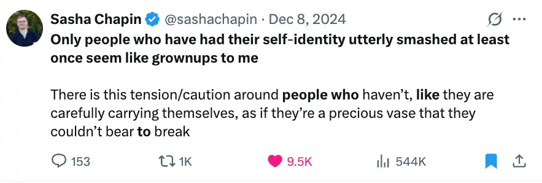

- 2025-08-09
- I’ve had this thought in my head since session 1 (session 2 is supposed to be next week, but I’m currently unsure if I should go ahead with it)
- Below are some scrappy thoughts
1. Who am I to prescribe anything?
- This was one thread in the discussion during the in-person family therapy session. There are a few things here:
1a. Who am I to tell someone how to live?
- In many ways, I am a deeply naive and clueless person. I pivot constantly, I lack a coherent worldview, I lack good epistemics, I’m at the very beginning of figuring anything out. I’ve been feeling recently like I’m now roughly a Kegan 4, as of… maybe a few months ago, if that. So, in a way, I’ve been almost-an-adult, for a few months (I say “almost” because I feel like, maybe a Kegan 3.8, or something). So, how insane to think that I can drag someone to family therapy because I think they should live according to my prescriptions?
1b. Who says I’m right?
- Similar to above point, but I think p(a year from now I think I was totally in the wrong re: my worldview, my plans, etc) is very high. I think I’ll think “totally makes sense that 29 year old Alex felt that way, and his heart was absolutely in the right place, but oh my god, the youthful arrogance”
- 40 year old Alex: “remember that time when I was about to turn 29 and I thought I should drag my mum to family therapy to get her to ‘wake up’ and change, whilst I was personally barely an adult and still had a huge amount of personal waking up/cleaning up/showing up to do? Why the hell did I choose that time to try to change someone else? Ultimately, because I was hoping it’d give me more peace of mind. I felt like I’d never be able to ‘move on’ whilst my family members were suffering (even if mostly unbeknownst to them)“
1c. Is it ethical to say terrible things to someone?
- If you are deeply judgemental about someone, should you tell them your judgemental thoughts? Or should you keep them to yourself? Are they useful data points for them to understand how they hurt you, that might help them to change? Or are they deeply hurtful things that they’ll never be able to unhear, and will reinforce their default state of being which involves repressing difficult truths?
1d. Is my prescription remotely possible?

- https://x.com/sashachapin/status/1865558631405752393
- My prescription to each family member is: “stop lying to yourself, face how unsatisfactory your life is, face it now, before it’s too late, I don’t want you to face it on your death bed and be filled with regret for what could have been”
- But - who am I to prescribe such a thing? It’s a very painful thing to do
- “You should do psychedelics, deeply feel into the profound pain that you’ve been avoiding, do a 2 year healing journey”
- “How do I ‘help’ my family” →
- “by waking them up to their cowardice and avoidance and shadow, and finally make profound changes to hugely improve their quality of life”
- “by being kinder to them and loving them”
- This also reminds me of the Simone Weil quote
- This sequence reveals a profound connection between her lived experience and her
developing metaphysics. Her later philosophy would posit that divine grace "can only enter where there is a void to receive it". → who am I to try to induce the creation of the void?
- This sequence reveals a profound connection between her lived experience and her
1e. The curse of knowledge
- There’s something here around → I’ve spend ~2-3 difficult, stumbling years trying to make progress in the “healing” space. I had a series of lucky breaks, circumstantial and constitutional luck. I don’t have a simple formula that I can prescribe. But, because I’ve made progress, I’m like “you’ve got to try, it’s worth it, and you’ll get there!“. But my progress isn’t even apparent to my family, and I don’t have a clear path to prescribe to them, other than… “face your pain, increase your self awareness, get involved in the community”, which, is anyone going to do that when they’re in their 60s?
2. Who am I to judge?
2a. Being angry at family members for human nature
3. Alternative paths
This is Water
- Does David say that you should be angry with people and try to shake them out of their default mode and radically change? Or does he say that life is about learning to exercise control over how and what you think, to be conscious and aware enough to choose what you pay attention to, and to choose how you extract meaning from experience?
- AKA John Vervaeke’s “perspectival” knowledge
- AKA something that my ethics tutor talked about in my second lesson with him, excitingly enough
Simone Weil’s “attention”
- From Gemini
In Simone Weil’s philosophy, “attention” is a concept of profound significance, extending far beyond its everyday meaning of focus or concentration. It is a central pillar of her ethical, spiritual, and educational thought, representing a particular way of being in the world that is both a moral act and a path to spiritual insight.
For Weil, attention is not a muscular effort or a straining of the will. Instead, she describes it as a “negative effort,” a form of passive, open waiting. It involves suspending one’s own thoughts and desires to become receptive to the reality of the other, whether that other is a person, a mathematical problem, or God. This is a state of “unmixed attention,” which she considered to be the same as prayer.
Weil famously wrote, “Those who are unhappy have no need for anything in this world but people capable of giving them their attention." She believed that true attention is the rarest and purest form of generosity. To attend to another person, especially one who is suffering, is to see them in their full humanity, beyond any labels or social categories. This act of seeing is an act of love and the very essence of justice. It requires emptying oneself of ego and preconceptions to truly receive the other person’s reality.
Weil saw the development of the faculty of attention as the primary goal of education. She argued that school studies, even seemingly mundane ones like geometry, are valuable not for their practical application but for their ability to train the mind in this specific form of attention. The effort to solve a problem, even if unsuccessful, cultivates a “more mysterious dimension” of the soul, a capacity for a deeper, more patient form of looking that can then be applied to all aspects of life.
For Weil, the highest form of attention is prayer. When directed towards God, this receptive and waiting attitude allows the soul to be penetrated by divine grace. This is not about formulating requests or engaging in a dialogue, but about a silent, loving orientation of the soul towards God.
In a world increasingly characterized by distraction and a “for-or-against mentality,” Weil’s concept of attention offers a powerful antidote. It calls for a radical openness to reality, a willingness to be transformed by what one encounters, and a deep respect for the inherent worth of every individual.
~Religious ideals and states of being
- Buddhism
- Metta
- Forgiveness
- Compassion
- Emptiness, deconstruction
- Breaking the defilements of craving, aversion, ignorance
- Christianity
- Christ-like compassion and forgiveness and an understanding that we are all fallen